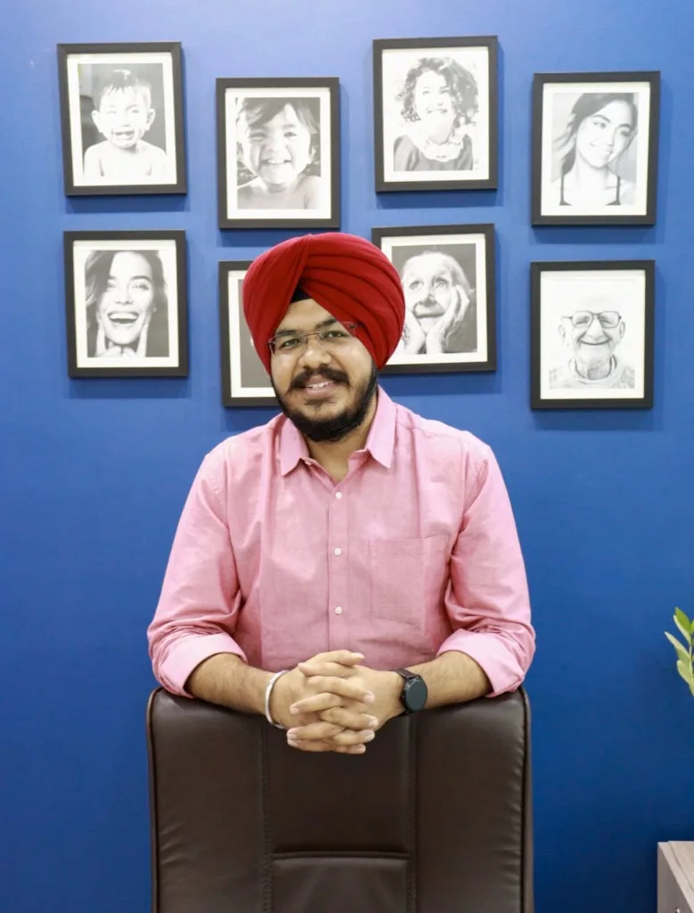
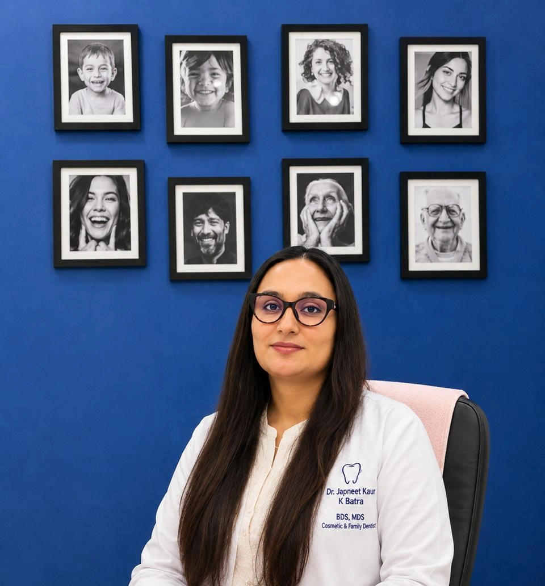
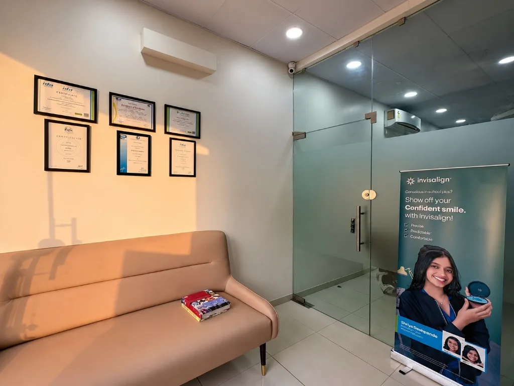
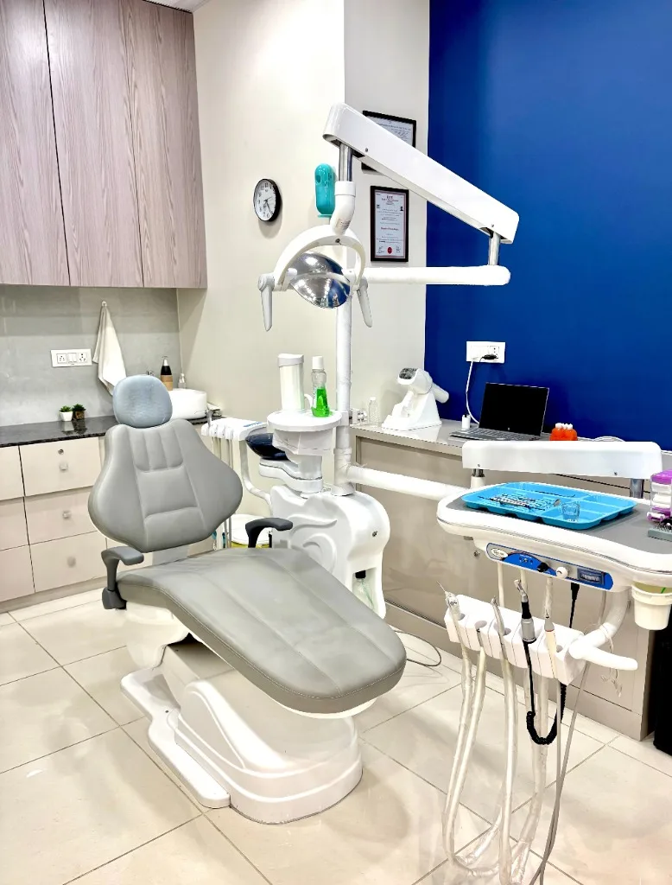

Dr. Gursimran Singh Batra | BDS, MDS

Dr. Gursimran Singh Batra is a Prosthodontist and Implantologist dedicated to restoring smiles, function, and confidence through advanced, ethical, evidence-based dental care. With expertise in Dental Implants, Crown & bridges, Dentures, Full-mouth rehabilitation, and Smile Transformations, along with a Fellowship in Root Canal Treatment (RCT) (Endodontics), he combines precision, innovation, and a patient-centered approach to deliver exceptional treatment outcomes. In addition to his specialty practice, Dr. Batra provides comprehensive general dental care, with a focus on preventive & general dentistry, restorative treatments, and long-term oral health.
As a Senior Lecturer and Examiner under Gujarat University, Dr. Batra remains actively involved in academics and research, ensuring that his patients benefit from the latest advancements in modern dentistry.
Qualifications & Academic Role
- BDS — Bachelor of Dental Surgery
- MDS — Master of Dental Surgery, Prosthodontics & Implantology
- Fellowship in Endodontics (Root Canal Treatment)
- Senior Lecturer and Examiner under Gujarat University
- Assistant Professor — actively involved in academics and research
Prosthodontics is the three-year postgraduate specialisation concerned with replacing and restoring teeth. It is the relevant qualification for implants, crowns, bridges, dentures and full-mouth rehabilitation — the areas where the difference between a general practitioner and a specialist shows most clearly.
Areas of Clinical Focus
- Dental implants — single, multiple and full-arch
- Fixed dentures on implants (All-on-4 / All-on-6) and implant-supported overdentures
- Crowns, bridges and veneers
- Dentures and bridges
- Full-mouth rehabilitation and smile transformations
- Root canal treatment — supported by his Endodontics fellowship
- Gum disease treatment and periodontal assessment
- Preventive, restorative and general dentistry
"Your smile deserves expert care, precision, and compassion."
Dr. Japneet Kaur Batra | BDS, MDS

Dr. Japneet Kaur Batra is an Orthodontist specializing in Braces, Clear Aligners, Invisalign, and Smile correction through advanced Orthodontic care. With a passion for creating confident, healthy smiles, she combines advanced orthodontic techniques with personalized care to deliver exceptional results for children, teens, and adults.
With a focus on modern, patient-centered treatment, Sr. Lecturer Dr. Batra is committed to helping patients of all ages achieve beautifully aligned smiles and improved oral health through the latest advancements in orthodontics. Alongside her orthodontic expertise, Dr. Batra provides general and paediatric dental care, helping children and adults maintain healthy smiles through preventive and restorative treatments. She has a special interest in the management of Cleft lip and palate patients, guiding facial growth and dental development from an early age as part of a multidisciplinary treatment approach.
Qualifications & Academic Role
- BDS — Bachelor of Dental Surgery
- MDS — Master of Dental Surgery, Orthodontics & Dentofacial Orthopedics
- Certified Invisalign Provider
- Senior Lecturer
- Special interest in the management of cleft lip and palate patients
Orthodontics & Dentofacial Orthopedics is the postgraduate specialisation in tooth movement and facial growth. It covers not only straightening teeth but guiding jaw development in children — which is why early assessment around age seven can change what is possible later.
Areas of Clinical Focus
- Dental braces — metal, ceramic and self-ligating
- Clear aligners and Invisalign
- Early growth guidance and interceptive orthodontics in children
- Management of cleft lip and palate patients as part of a multidisciplinary approach
- Paediatric and general dental care
- Bite correction and smile correction

The Clinic
Dr Batra's Dental Hub is a multi-speciality dental clinic in South Bopal, Ahmedabad, run by two MDS specialists. Having both a prosthodontist and an orthodontist in the same practice means most treatment plans — including combined cases such as orthodontics followed by implants or crowns — can be diagnosed and delivered in one place.

Class B vacuum autoclaving, with instrument pouches opened at the chair.
Technology & Clinical Standards
- Digital intraoral cameras with chairside screens, so you see what the dentist sees
- Digital radiography — low-radiation panoramic and RVG imaging
- 3D CBCT scanning for implant planning
- Rotary endodontic instrumentation and electronic apex locators for root canal treatment
- Dental diode laser for soft-tissue procedures and periodontal pocket disinfection
- Magnification loupes for conservative, precise clinical work
- Class B vacuum autoclave sterilisation, with instrument pouches opened at the chair

Visiting Us in South Bopal
The clinic is at B-17/C, Sun South Street, behind Safal Parisar-1, South Bopal, Ahmedabad 380057, on the ground floor — which matters more than you might expect for elderly patients and anyone with mobility difficulties.
We are a short drive from Bopal, Shela, Ghuma, Shilaj and Ambli, and straightforward to reach from across Ahmedabad via the SP Ring Road. Opening hours are Monday to Saturday 10:30 AM–8:00 PM and Sunday 10:00 AM–12:00 PM — Sunday appointments suit patients who cannot attend during the working week.
You are welcome to visit and look around before committing to treatment, including the sterilisation area. Get in touch or see all treatments.
Frequently Asked Questions
Dr Batra's Dental Hub is led by Dr. Gursimran Singh Batra (MDS Prosthodontist & Implantologist) and Dr. Japneet Kaur Batra (MDS Orthodontist & Aligner Specialist), both Assistant Professors and Senior Lecturers.
Both doctors hold MDS (Master of Dental Surgery) degrees. Dr. Gursimran specializes in Prosthodontics & Implantology, and Dr. Japneet specializes in Orthodontics & Dentofacial Orthopedics.
Yes, we are open on Sundays from 10:00 AM to 12:00 PM. Regular hours are Monday to Saturday, 10:30 AM to 8:00 PM.
We are located at B-17/C, Sun South Street, Behind Safal Parisar-1, South Bopal, Ahmedabad, Gujarat 380057.